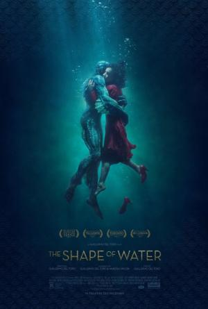
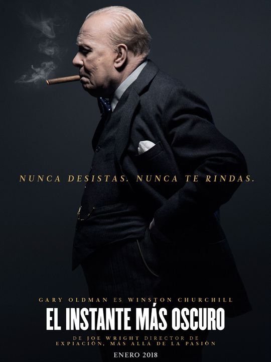
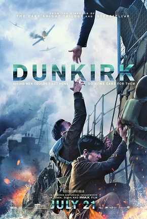
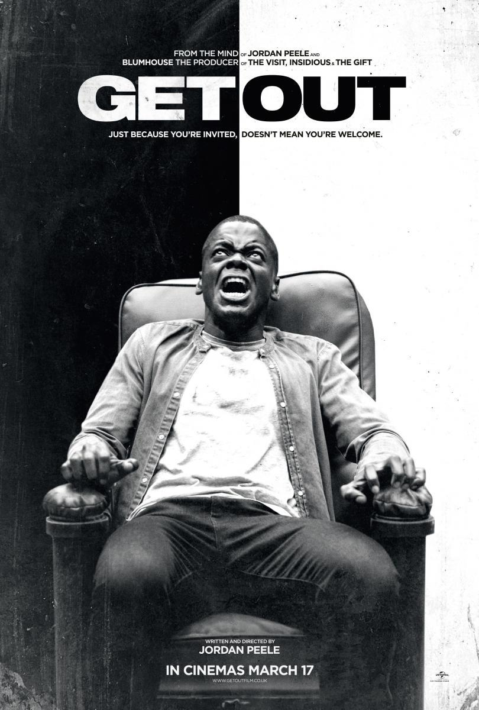

-
Ganador: La forma del agua
En un inquietante laboratorio de alta seguridad, durante la Guerra Fría, se produce una conexión insólita entre dos mundos aparentemente alejados. La vida de la solitaria Elisa (Sally Hawkins), que trabaja como limpiadora en el laboratorio, cambia por completo cuando descubre un experimento clasificado como secreto: un hombre anfibio (Doug Jones) que se encuentra ahí recluido
-
Call Me By Your Name

Elio Perlman, un joven de 17 años, pasa el cálido y soleado verano de 1983 en la casa de campo de sus padres en el norte de Italia. Se pasa el tiempo holgazaneando, escuchando música, leyendo libros y nadando hasta que un día el nuevo ayudante americano de su padre llega a la gran villa. Oliver es encantador y, como Elio, tiene raíces judías; también es joven, seguro de sí mismo y atractivo. Al principio Elio se muestra algo frío y distante hacia el joven, pero pronto ambos empiezan a salir juntos de excursión y, conforme el verano avanza, la atracción mutua de la pareja se hace más intensa.
-
El instante más oscuro
Drama ambientado en 1940, cuando Winston Churchill (Gary Oldman) se convierte en primer ministro británico en un momento realmente crucial de la Segunda Guerra Mundial, pues los nazis avanzan imparables conquistando prácticamente la totalidad del continente europeo y amenazando con una invasión a Inglaterra. Churchill deberá entonces explorar la posibilidad de un tratado de paz con Alemania, o ser fiel a sus ideales y luchar por la liberación de Europa.
-
Dunkerque
Año 1940, en plena 2ª Guerra Mundial. En las playas de Dunkerque, cientos de miles de soldados de las tropas británicas y francesas se encuentran rodeados por el avance del ejército alemán, que ha invadido Francia. Atrapados en la playa, con el mar cortándoles el paso, las tropas se enfrentan a una situación angustiosa que empeora a medida que el enemigo se acerca.
-
Déjame salir
Un joven afroamericano visita a la familia de su novia blanca, un matrimonio adinerado. Para Chris (Daniel Kaluuya) y su novia Rose ha llegado el momento de conocer a los futuros suegros, por lo que ella le invita a pasar un fin de semana en el campo con sus padres, Missy y Dean . Al principio, Chris piensa que el comportamiento "demasiado" complaciente de los padres se debe a su nerviosismo por la relación interracial de su hija, pero a medida que pasan las horas, una serie de descubrimientos cada vez más inquietantes le llevan a descubrir una verdad inimaginable
-
Lady Bird

Una joven estudiante que se hace llamar "Lady Bird" (Saoirse Ronan) se muda al norte de California para pasar allí su último año de instituto. La joven, con inclinaciones artísticas y que sueña con vivir en la costa Este, tratará de ese modo encontrar su propio camino y definirse fuera de la sombra protectora de su madre (Laurie Metcalf).
-
El hilo invisible

En el Londres de la posguerra, en 1950, el famoso modisto Reynolds Woodcock (Daniel Day-Lewis) y su hermana Cyril (Lesley Manville) están a la cabeza de la moda británica, vistiendo a la realeza y a toda mujer elegante de la época. Un día, el soltero Reynolds conoce a Alma (Vicky Krieps), una dulce joven que pronto se convierte en su musa y amante. Y su vida, hasta entonces cuidadosamente controlada y planificada, se ve alterada por la irrupción del amor
-
Los archivos del Pentágono

En junio de 1971, los principales periódicos de EE.UU., entre los que se encontraban The New York Times y The Washington Post, tomaron una valiente posición en favor de la libertad de expresión, informando sobre los documentos del Pentágono y el encubrimiento masivo de secretos por parte del gobierno, que había durado cuatro décadas y cuatro presidencias estadounidenses. En ese momento, Katherine Graham , primera mujer editora del Post, y el director Ben Bradlee intentaba relanzar un periódico en decadencia. Juntos decidieron tomar la audaz decisión de apoyar al The New York Times y luchar contra el intento de la Administración Nixon de restringir la primera enmienda... Historia basada en los documentos del Post que recogían información clasificada sobre la Guerra de Vietnam